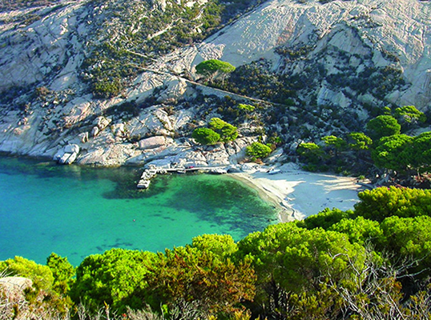
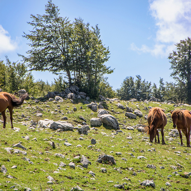
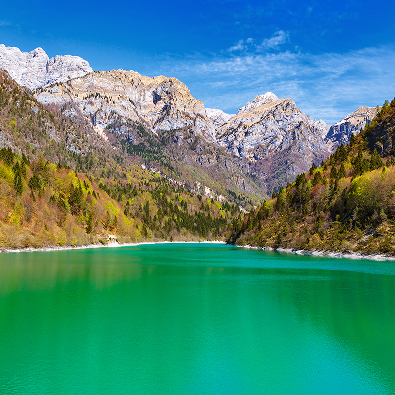
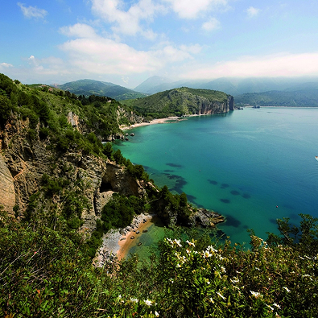

Esplora i maestosi parchi nazionali italiani: luoghi incantati dove montagne, coste e antiche foreste raccontano la storia e la bellezza senza tempo del nostro Paese.
Scopri i 12 parchi nazionali italiani, un mosaico di montagne, mari e foreste di inestimabile valore. Ogni area protetta racconta storie di biodiversità, paesaggi unici e tradizioni centenarie da vivere e rispettare. Avventure e meraviglie attendono.











Parco Nazionale del Gran Paradiso
Parco Nazionale dell'Arcipelago di La Maddalena
Parco Nazionale delle Foreste Casentinesi, Monte Falterona e Campigna
Parco Nazionale d'Abruzzo, Lazio e Molise
Parco Nazionale del Cilento, Vallo di Diano e Alburni
Parco Nazionale delle Dolomiti Bellunesi
Parco Nazionale delle Cinque Terre
Privacy Chi siamo